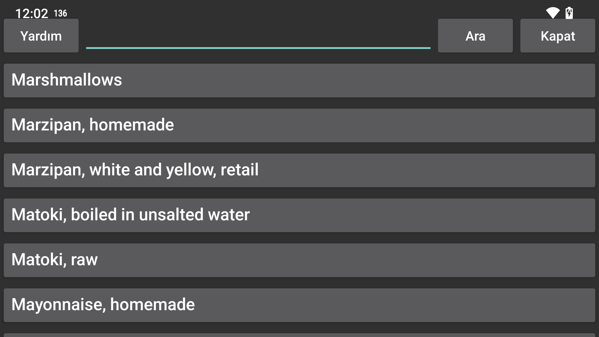

Gıda bileşim veritabanı
Burada McCance ve Widdowson’ın The Composition of Foods Integrated kitabındaki yiyecekleri arayabilirsiniz Dataset 2021 https://www.gov.uk/government/publications/composition-of-foods-integrated-dataset-cofid
Düzenli ifadeleri kullanarak arama yapabilirsiniz (https://www.regular-expressions.info/quickstart.html). Örneğin, şu harfle başlayan öğeleri arayabilirsiniz: elma kelimeyi takip eden çiğ with: ^elma.*\braw\b
Aranır elma elma içeren tüm öğeleri verir.